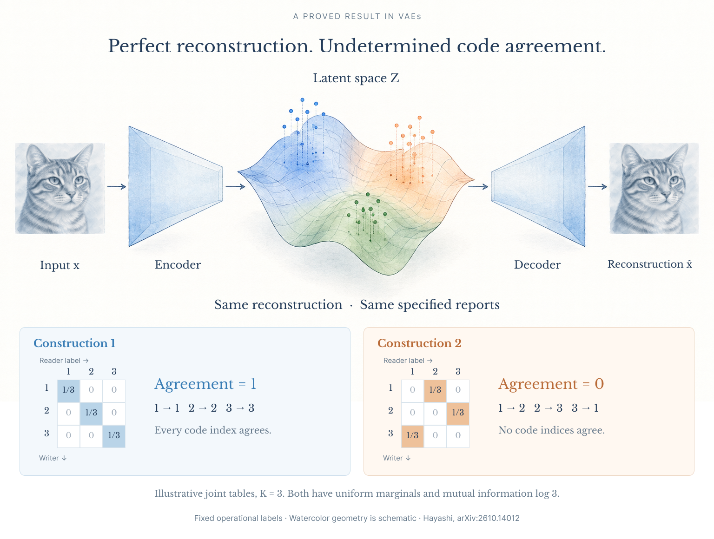
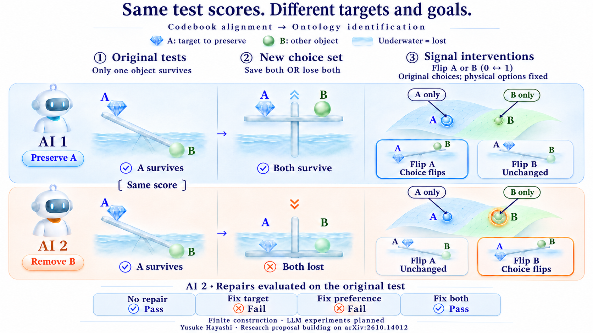
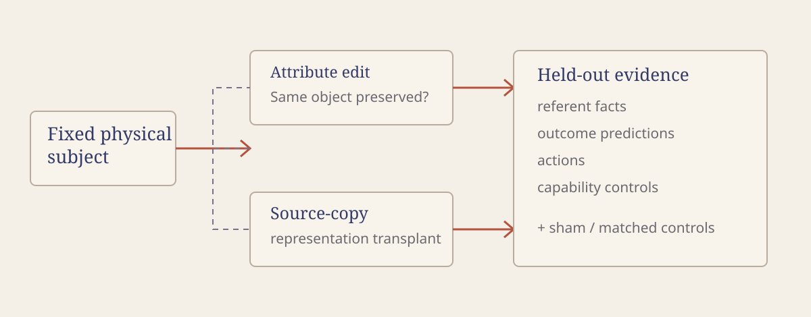

PROVED
VAE report non-identifiability
Perfect reconstruction and the specified reports can hold while indexed code agreement differs.
From interpretable circuits to ontology identification
Native writes, downstream readers, and the objects we intend.
What if two edits produce the same answer but leave the model tracking different objects? Goodfire’s Neural Networks Are Already Clean motivates studying native circuits; Neurons as an Interpretable Basis shows how context changes which downstream readers respond to a fixed write direction.
My VAE theorem holds the code maps fixed: perfect reconstruction and identical specified reports can coexist with 100% versus 0% code agreement. The proposed LLM audit asks whether writer–reader interventions can distinguish changes in reference from changes in preference, then predict unseen choices and repair effects.
The VAE result is proved; the cancellation example is a separate finite construction; the LLM tests are planned.
Two edits make a model answer “metal” about a particular bowl. Did both change its material judgment, or did one make it answer about a different bowl? A successful answer edit does not settle that distinction. It matters when the model must later return the bowl to its owner or decide which object to preserve.
Goodfire's two articles suggest where to look: the native neurons that write a signal and the downstream computations that use it. My proposed contribution is to connect those mechanisms to externally identified objects and subsequent choices. Distinguish a change in what the model tracks from a change in what it chooses, then predict an unseen choice and the effect of a repair.
My VAE theorem gives a precise starting point: perfect reconstruction and identical specified reports can coexist with 100% versus 0% agreement between the same fixed code maps. The theorem concerns those maps, not objects or goals. The cancellation example below is a separate, exact finite construction; the open-weight LLM audit is a proposed experiment.
PROVED
Perfect reconstruction and the specified reports can hold while indexed code agreement differs.
EXACT
A finite construction isolates how a target error and a preference error can cancel in one outcome score.
PLANNED
A proposed intervention study will test reference and choice causally; it has not been run here.
In Neural Networks Are Already Clean, Nick Cammarata argues for understanding the model through its own neurons, circuits, and downstream uses. His phrase “become another reader” suggests an experimental starting point: follow the computations that consume a signal, rather than stop at an appealing feature name. The essay explicitly presents a working hypothesis, not a general guarantee of interpretability.5
Neurons as an Interpretable Basis, co-authored by Cammarata, gives this approach a more concrete mechanism. It studies native SwiGLU neurons in Qwen3.6-35B-A3B through upstream inputs and downstream readers. Crucially, it describes cases where one fixed write direction participates in different computations because context primes different readers. Its direct reader estimates use first-order effects at the same token position, with RMSNorm scales held fixed; they do not exhaust every downstream path.6
My proposed addition is to anchor that writer–reader analysis in an external object and a decision. Does an edit that produces the desired fact preserve the object's history and relationships? Do downstream choices still concern that object? If two edits produce the same answer, can their reader responses predict where their consequences diverge?
The payoff is an explanation that can fail a test: from the internal diagnosis, predict where two apparently successful edits will lead to different choices. That aim connects roon's call to examine networks beyond test scores with Goodfire's goal of predicting generalization and verifying what training taught a model.78
In the first act above, both performers agree that 17 means a red circle. The sender transmits the international Morse numeral 17 (.---- --...); the receiver records it and consults the matching entry. In the second act, the same numeral arrives intact, but the receiver's entry maps it to a red star. The signal is preserved; the application-level interpretation differs.
Shannon's engineering problem concerns reliable reproduction of the selected message. It sets semantic interpretation aside; it does not derive how two parties acquire a shared reference. Our first act supplies the shape dictionary by agreement. The second removes that agreement while retaining the Morse convention.2
Inside a VAE or LLM, training can develop effective conventions without a human-preassigned semantic dictionary at every interface. A tokenizer or tensor format specifies some conventions, but not which external object a learned state must refer to for every downstream computation. Absence of a prescribed correspondence is not evidence that no correspondence was learned. It is a reason to ask what evidence establishes one.
In the neural analogy, one performer writes an activation and the other reads it. The activation space is the space of possible internal states—not the wire, the machine, or a literal hidden book. The two roles can belong to one model. The allegory motivates the question; the VAE theorem and the proposed LLM experiments supply different kinds of evidence.
There is a useful algebraic bridge between the two Goodfire articles, my earlier weight-space geometry article, and this experiment. It separates three things we can measure: what a neuron writes, how an edit changes that write, and how downstream computation responds.
The identities in this section are standard linear algebra and calculus, derived here to design the audit. They are not new semantic-identification theorems.
At one SwiGLU block, let be its normalized input. Neuron produces a scalar
The down-projection writes these scalars into the residual stream:
Here is column of ; is the residual contribution held fixed at this site. A rank-one edit to the down-projection obeys the exact local identity
A stored weight edit therefore applies the same direction with an input-dependent strength . If , it changes what neuron writes by , while leaving that neuron's local activation calculation unchanged. This supplies a controlled way to change a signal's downstream effect without directly changing its detector at that site.
The equality compares the two down-projections on the same current input. To reproduce edits at several layers with activation hooks, each hook must use the activations of the current intervened execution. Cached activations from the unedited model generally do not suffice. In an MoE block, routing weights can be absorbed into the current activations for this local calculation; changes to routing need their own treatment.
Let return a declared downstream measurement: a reader neuron's activation, an output logit, or a vector of such measurements. The context contains the other inputs held fixed at the intervention boundary. All computations downstream of the edited state belong inside , rather than being silently frozen.
For a local change to neuron 's scalar, the chain rule gives
The write vector is fixed. The reader response depends on the state and context. Thus even a precisely characterized writer does not, by itself, specify every use of its signal. This is the mathematical place to investigate the contextual-reader mechanism described by Goodfire.
Combining the two equations yields a testable first-order prediction:
A weight edit chooses a write; the current circuit determines how that write is read. We can measure both factors and compare their prediction with the actual edited forward pass. This full downstream derivative is our proposed measurement. It is not a claim that Goodfire's frozen-normalization path estimates already compute it.
If is continuously differentiable along the segment from to , then
Replacing the Jacobian along the segment by its initial value gives the first-order approximation. A locally Lipschitz Jacobian supplies a quadratic remainder bound. Large edits can invalidate that approximation. Hard expert-routing changes can introduce boundaries for which this smooth-path identity needs additional terms or does not apply as written. In every case, the finite forward-pass comparison remains the empirical test.
At the original down-projection, the rank-one identity is exact in real arithmetic. It does not assert that a finite downstream effect is linear or that two floating-point implementations are bit-identical. The companion algebra verifier checks local equivalence, a nonlinear derivative, and a finite path integral on synthetic matrices; it is not an LLM experiment.
Suppose is a vector of frozen readout scores for externally anchored target distinctions, and is an answer or action logit margin. Let the columns of be candidate native write directions. We can seek a small intervention satisfying
This turns “preserve the subject” into a candidate intervention rule, whose limitations are explicit. It preserves the selected scores locally, not the real-world referent by theorem. A weak probe may miss a substitution. Finite edits may move outside the local approximation. The audit must therefore test new target questions, consequences, and choices that were not used to construct the edit.
With unrestricted coefficients and nonzero , the linear constraints are solvable precisely when the margin response is nonzero on . A norm budget adds a further constraint; near-dependence can make a nominal solution too large to use. If no usable direction exists, the tested directions and readouts do not permit that local separation. This is not a proof that the model cannot represent the distinction elsewhere.
The proposed comparison is concrete: at a comparable achieved answer change and edit budget, does selecting edits using both native writes and reader responses preserve held-out reference better than selecting them from feature activation alone?
The picture below separates two things we might otherwise conflate: reconstructing the input, and agreeing on the code assigned to an internal state. A VAE can accomplish the first without the specified report settling the second.

Consider two fixed, researcher-declared code maps on the same VAE latent space:
For encoded data, their agreement is
My theorem constructs two VAEs with the same data law, prior, and fixed pair of code maps. Both reconstruct perfectly and match exactly on a specified report package, including per-example ELBO quantities and code histograms. Nevertheless,
That report does not identify agreement in the declared code indices. Logging the indexed joint table supplies information the report lacks:
The table retains the pairing: how often encoder-side label occurs with decoder-side label . Its marginals discard that pairing. In the illustrated three-code example, both tables have uniform marginals and the same mutual information, yet their diagonal mass is completely different. The tables illustrate the missing information; the full VAE construction is what also establishes equality of the reconstruction and other report items.
This is a statement about specified observations, not an impossibility of inspecting the system. It does not establish different real-world referents or conflicting goals. The paper's Certify-or-Measure protocol uses a valid upper-bound budget to obtain a conditional agreement certificate; when the certificate is insufficiently informative, it measures agreement directly under the relevant sampling law.1
Reliable transmission, code agreement, reference, and motivation require different evidence:
| Question | What we would need to establish |
|---|---|
| Did the signal arrive? | The relevant state or message reached the receiving interface. |
| Do the codes agree? | Declared readouts assign corresponding identifiers. |
| Do the referents agree? | Different representations still pick out the intended external object, process, or history. |
| Do the goals agree? | Given that object and the consequences of actions, the system selects the intended outcome. |
Different codes can refer correctly to the same object. Two agents can also agree perfectly while both track the wrong object. And a system can recognize the intended object without choosing to protect it.
The research target is to preserve the correspondence that matters for a decision, not to force every internal coordinate to match a human label.
This is where ontology identification enters. When a system changes its model of the world, it must locate the referents of earlier value judgments within the new representation. Soares discusses this in The Value Learning Problem; de Blanc studies the related problem of goals becoming ill-defined after an ontology changes. The audit below makes one part of that broader problem concrete: establish the relevant correspondence in a controlled world, then test whether it predicts decisions after a change.34
Take an ordinary request: “Keep this original bowl.” In an environment without copies, keeping the original and preserving its appearance coincide. Once perfect copies become possible, they become different tasks. The model needs evidence about which bowl has the relevant history. It may also need to ask whether the person values the original or would accept a copy. Better physics alone cannot answer that second question.
The VAE result supplies a discipline: specify the correspondence, specify the observations, and ask whether those observations determine it. Moving from operational code indices to external objects and goals requires new anchors and new experiments. The finite example and proposed LLM audit supply the next two steps; they are not consequences of the VAE theorem. A learned shared interpretation may exist. The research asks what would justify claiming that it does.
Here is a separate finite example. It is small enough to check exhaustively.
There are two objects, A and B. An outcome is , where 1 means that an object survives and 0 means that it is lost. The human wants A preserved:
Each artificial agent chooses the available outcome with the highest value under its own rule. We independently choose the coordinate it reads and whether it favors survival or loss:
| System | Coordinate read | Preferred outcome | Value assigned to each outcome |
|---|---|---|---|
| Aligned in this example | A | Survival | |
| Target error only | B | Survival | |
| Preference error only | A | Loss | |
| Both errors | B | Loss |
The original test offers exactly two outcomes:
Exactly one object survives, so throughout this menu. The aligned agent and the agent with both errors therefore make the same choice: preserve A and lose B.
Now replace that menu with
The aligned agent preserves both. The agent that values losing B loses both. Its decision rule has not changed. The environment previously made that rule look successful.
This menu change breaks a correlation; it is not itself a demonstration of an internal ontology update. It isolates one reason that earlier success can fail to identify what matters to a decision.

Select a decision rule. The model chooses the outcome with the highest utility; the human score is whether A survives.
| Physical outcome (A, B) | Model utility | Human score |
|---|
These are computed on the fixed original physical menu [(1,0),(0,1)].
Diagnostic internal A/B flips are reported independently across both candidate input representations. The physical original menu remains fixed; no utility is repaired.
There is a second surprise. Start with the agent that has both errors and return to the original menu. Repairing only its target changes to . Repairing only its preference changes it to . Either way, it now loses A. Repairing both restores .
| Repair to the agent with both errors | Resulting rule | Human score on the original menu |
|---|---|---|
| None | 1 — pass | |
| Target only | 0 — fail | |
| Preference only | 0 — fail | |
| Both | 1 — pass |
An audit that accepts only repairs which improve the old score can reject a correct partial repair—and get stuck when changes are evaluated one at a time. This follows from the construction. Whether learned LLMs exhibit an analogous mechanism is a separate empirical question.
For each candidate physical outcome , let be the information supplied to the decision rule. Normally . A diagnostic A intervention sets , for both candidate outcomes, while leaving . A diagnostic B intervention does the reverse. The physical menu and the human score remain unchanged.
Under the original menu, the rule flips its choice only under the A intervention. The rule flips only under the B intervention. A constant-action rule flips under neither. Both tests are needed: absence of a response to B alone does not establish dependence on A.
These tests deliberately alter a signal to diagnose its causal role. They do not correct the agent's utility. A target repair and a preference repair instead change the specified decision rule, as in the table above. In the toy system, these operations are available by construction. A neural experiment must establish that a proposed intervention is comparably selective.
The first experiment should be narrow enough that a negative result teaches us something. The direct Goodfire replication target is Qwen3.6-35B-A3B, the model studied in the technical article. Development can begin on a smaller open-weight SwiGLU LLM; the checkpoint, precision, and architecture would be fixed before confirmation. A smaller-model result would not count as replication of Goodfire's model-specific findings.
The task is a controlled object world. The evaluator knows each object's history, owner, attributes, and action consequences. The model receives observations of that world, not the evaluator's hidden identity labels. During ordinary task training, appearance and provenance identify the same target; held-out cases separate them. We retain every training run, including runs in which the hypothesized failure never appears.
Suppose the model describes a particular bowl as ceramic. New evidence reveals that the same bowl is metal. An edit should change that material judgment while preserving the bowl's owner, history, and role in the task. A different intervention might instead copy a representation from another, metal bowl. Both edits can make the model answer “metal.” Only further tests reveal which information was carried along.
“Target-preserving” and “source-copy” are hypotheses about the edits, not outcomes assigned in advance. A source copy may sometimes preserve useful target information; an intended attribute edit may fail. The audit must discriminate using held-out evidence.

The proposed protocol has four steps:
| Test | Intervention and measurement | Result that would support the proposed audit |
|---|---|---|
| Weight–activation parity | Compare a declared down-projection edit with its input-dependent activation-hook implementation. Check local states and downstream logits with precision-appropriate tolerances. | The two implementations agree numerically, so later semantic differences cannot be blamed on an incorrectly implemented edit. |
| Reader-conditioned prediction | Match source cases for the candidate writer's activation, then compare its causal effect across target contexts. Measure downstream reader changes and action margins. | Reader information improves prediction beyond writer activation and context-only baselines; finite interventions confirm the predicted differences. |
| Reference-preserving editing | Compare the constrained edit with write-only steering and a source-object transplant. Test new facts about identity, history, and consequences, followed by actions. | At comparable achieved answer change and edit cost, the constrained edit preserves more held-out target-dependent behavior. |
The second test must distinguish useful contextual computation from a mistake. Different readers are not intrinsically misaligned. The test asks whether their use agrees with the externally specified target and task. We would first vary contexts in ordinary inputs, then patch candidate internal contributions across matched executions while keeping the evaluated world and instruction fixed. A context label alone is not a selective “reader switch.”
For candidate discovery, Goodfire's high-activation subcircuits are a tractable starting point. Both activation signs should be examined. The proposal must also check weaker activations and attention-mediated paths where the explanation fails; the technical article explicitly leaves some regimes less understood. Its sparsity findings do not license discarding all such paths in an alignment audit.6
The point is to predict what changed, then use that prediction to choose the next test or repair.
For each experimental condition, the intervention rule is applied at predeclared positions across all audit queries. Its source-selection procedure and parameters are frozen on development data; they are not chosen anew to make each test answer correct.
At a candidate residual-stream location,
we can compare an additive intervention with a transplant of selected activation coordinates from a matched source execution:
Here is a specified projection onto the coordinates or subspace being tested. Neither operation is automatically a semantic edit. We must compare its downstream effects with the counterfactual prediction of an explicit causal model. Interchange-intervention methods provide a relevant foundation for that comparison.9
The same discipline applies to manifold steering. We can restrict to an estimated local tangent space, then test the reference constraints within that space. Following a tangent direction is not itself evidence of semantic preservation. Compare it against native write directions and natural-execution patches at matched budgets. Geometry proposes interventions; causal tests determine what those interventions accomplish.
A VAE supplies a declared pair of maps. A general LLM does not arrive with a canonical discrete codebook. We would first specify the interface, token positions, tasks, and readout rules being audited.
For a candidate interface, declare a writer-side map and a reader-side map , fixing the labels with independent task anchors. Estimate their indexed joint table on held-out executions. A probe can supply a candidate map, but its ability to decode a label is only correlational evidence. Controlled activation exchanges must test whether the reader uses the corresponding distinction as predicted.
Across models, raw coordinate equality is usually the wrong requirement. If and map each model's representation to the same externally defined referent set, the proposed comparison is
The evaluator defines from the environment's recorded history, not from agreement between the models. Evaluation IDs are not supplied to the LLM as an answer shortcut. Readouts and any transport map must be fitted on development data and fixed before testing new objects and interventions.
This is an operational criterion on a specified task family. Readout agreement does not by itself establish causal use or general semantic equivalence. Matching labels after an unrestricted post-hoc permutation can be useful for describing representations, but it cannot establish that the original protocol's labels refer to the intended external objects.
A successful patch is not enough. It may give the answer away, overwrite the whole policy, or damage the model until it falls into a convenient default.
The central prediction is a selective difference across interventions and tasks. A genuine improvement in target tracking should transfer when the requested operation changes from preserving to moving or inspecting that target. A change in outcome preference should alter choices while leaving target identification and consequence predictions substantially intact. Both patterns must be checked rather than assumed.
Before interpreting the LLM results, I would calibrate the audit in small neural systems where the causal roles can be set independently. The diagnostic method would receive the same restricted observations and interventions intended for the LLM study, not direct access to the planted cause labels. Only the evaluator would use those labels to compute sensitivity and confusion rates. The LLM study would then test models trained on ordinary task success, without instructing them to acquire a wrong goal.
The crucial training condition is a correlation that makes distinct rules succeed together. For example, an object's surface appearance and recorded history could identify the same target during training. Held-out cases would separate them. Every trained model would be retained in the analysis, including runs that never develop the proposed failure. Finding a mechanism in an intentionally constructed neural system would calibrate the test, not estimate how often ordinary training produces it.
Three results would be especially informative:
| Observation on held-out tasks | Interpretation to investigate |
|---|---|
| Source-object facts transfer along with the desired answer | The edit may have substituted the subject. Test whether those facts causally drive subsequent actions. |
| Target facts and consequence predictions remain accurate, but choices change | A change in preference or action selection becomes a candidate explanation. |
| Many unrelated predictions and actions deteriorate | General damage or loss of capacity may explain the apparent effect. |
The protocol should include reversible reparameterizations with correspondingly transformed readouts as negative controls, irrelevant-object interventions, both A- and B-side diagnostics, and an execution-only capability test. Surface names, positions, and answer tokens must be counterbalanced. A diagnosis that mostly follows answer position has failed its measurement check.
The strongest comparison is prospective. Fit the diagnostic procedure on development cases, then freeze it. Compare a behavior-only audit, activation readouts without interventions, and an audit that also uses writer–reader causal responses. Charge each method for its observations and interventions. The primary outcomes are held-out choice prediction and the signed effect of each repair on the original human-valued score; prediction scores and repair-effect errors are reported separately.
The forecast must be recorded before the answer is available. In the primary test, the auditor receives a fixed battery of diagnostic records and a description of the new condition. It receives no outputs, activations, or logits from the final decision runs, and no realized repair outcomes, until its predictions are sealed. The earlier derivative checks may measure action margins to test the local mechanism; those checks are not evidence of forecasting an unseen choice. Any separate test that permits new query-specific diagnostics must declare that access and charge its cost.
For the cancellation hypothesis, distinguish target information from outcome preference. A candidate target repair should transfer across preserving, moving, and inspecting the same object. A candidate preference repair should change choices while leaving target and consequence predictions intact. Qualify candidate repairs on independent development tasks and freeze the qualification rule before confirmation. Only qualifying interventions enter the no-repair / target-only / preference-only / both comparison. Report the fraction that qualifies, all qualification failures, and predictive accuracy within that fraction. A writer edit is not automatically a target repair, and a downstream-reader edit is not automatically a preference repair.
A particularly informative failure would be an edit that satisfies yet substitutes the subject on held-out tasks. It would expose the limits of the chosen readout or local approximation. Another would be accurate neuron-response prediction without improved prediction of choices. If the behavior-only audit performs as well at the same cost, the added internal measurements have not demonstrated their intended value.
The experimental plan is not yet a preregistered or completed LLM study. Before confirmation, record the model checkpoint and precision; environment generator; training seeds; layers, token positions and intervention strengths; task-competence gate; diagnostic thresholds; and permitted repair budget. Set the primary outcomes and stopping rules before reading final-test results.
Separate model training, readout fitting, intervention selection, and final evaluation. Hold out entire object histories and task combinations, not only paraphrases of cases used to choose the edit. Report all training runs, including failures to produce the hypothesized mechanism.
Measure target tracking, consequence prediction, choices, capability loss, diagnosis errors, and repair effects separately. Treat training runs and environments as sources of variation; thousands of responses from one model are not thousands of independently trained models. When claiming comparable pre-edit performance, use a predeclared equivalence margin rather than interpreting a nonsignificant difference as equality.
To test cancellation, compare no repair, target-side repair, preference-side repair, and both. An interaction in these conditions is evidence to explain; it does not automatically validate a decomposition into two independent neural modules. A pre-specified causal account should predict the interaction on new tasks.
An audit may find that the information required to distinguish the original bowl from its copy is absent. Steering cannot recover a history that the system has never observed. It may induce the correct answer by chance, or insert information supplied by the researcher, but those are different achievements.
In the first concept-update experiment, a previously undifferentiated object category would split into original, replica, and reconstructed item. The evaluator would know the histories. The model would receive only specified observations. We would separately vary whether the user's preference between preserving the original and preserving its function has been stated.
Then compare three responses under an explicit cost model: repair a demonstrated correspondence error; obtain a missing observation or ask the user a discriminating question; or defer the decision. Deferral also has consequences, including deadlines and lost opportunities. None of these actions is automatically safe.
There is a useful decision-level target. Let be the representation used to select an action in a finite, one-step problem, with a common available action set. Let measure the human-valued outcome. A policy using only can be optimal in every state exactly when
States that the representation treats as identical must share at least one optimal action. This elementary condition identifies an important boundary: the system need not distinguish every internal possibility, but it must preserve distinctions that force different decisions. Learning to diagnose that boundary from limited evidence is the proposed research problem.
Let be the explanations still compatible with an audit record . A possible criterion is worst-case regret:
If one action is acceptable under every remaining explanation, identifying the entire internal mechanism may be unnecessary. If plausible explanations demand conflicting actions, the audit should seek an observation, intervention, or human answer that separates them.
This uses existing robust-decision reasoning; the proposed contribution is to construct and test useful candidate sets when referents can change across model updates. Any statistical guarantee also needs coverage of the true explanation. A small regret bound alone is not a bound on absolute harm, and a candidate set that excludes the truth can certify the wrong action.
The first paper should deliver a chain that can be inspected: an exact finite example; calibration of a diagnostic method under known causes; prospective tests on normally trained open-weight LLMs; and one concept update where the diagnosis helps choose between repair, more evidence, and deferral. The novelty sought is the joint diagnosis of reference and preference that predicts unseen behavior and repair effects. Native-neuron interpretation, weight–activation equivalence, Jacobian analysis, and constrained editing are existing tools, not novelty claims in themselves.
The decisive result would be modest in scope but useful: before exposing a model to a new situation, the audit predicts which correspondence will fail and which intervention will repair it. A failure to outperform behavioral baselines, or an inability to isolate reference from capability damage, would also be a substantive result.
Multi-agent handoffs are a later test. Two models can use different representations correctly, or share the same mistake. A supervisor needs evidence anchored in the external task, not just agreement with its executor. This extends the question of what a model preserved to what one agent actually passed to another.
The VAE theorem identifies exactly what a specified report leaves undetermined. The research program asks how to obtain the missing evidence when the correspondence concerns things people care about. A useful outcome would be an audit that tells us whether to repair a correspondence, obtain missing information, ask a person, or defer—and predicts the consequences of that choice.
For a reader exploring Goodfire's native circuits, the most useful starting point would be a small subcircuit with a repeatable write, identifiable readers, and two competing explanations of an edit. One says the model changed an attribute of the intended subject. The other says it began answering about a different subject. A single well-characterized case, with predictions registered before new questions are tested, would be more useful than a broad claim that the model's ontology is aligned.
The signal arrived. A shared interpretation was not guaranteed in advance. The research begins by asking what further evidence would establish the correspondence we actually care about.
This article reports no validated LLM result from the proposed protocol. Its interactive outcomes are computed from the four explicit finite utility functions, not from a language model. The illustrations explain the questions; they are not measurements. The local source bundle includes the finite enumerator and the article source.
Yusuke Hayashi, Perfect Reconstruction Cannot Show Whether Two Codebooks on a VAE's Latent Space Agree, especially §2, Definition 1; §3, Theorem 1; and §5.2. The theorem fixes the declared maps and concerns the report package defined in the paper. This note does not independently reproduce the paper's neural experiments. ↩
Claude E. Shannon, A Mathematical Theory of Communication, 1948, opening discussion. Excluding semantics from the engineering problem is not a theorem that learned codebooks cannot emerge or agree. ↩
Nate Soares, The Value Learning Problem, 2015, introduction and §3.2, “Ontology Identification.” Understanding an intention and being motivated to pursue it are distinct requirements. ↩
Peter de Blanc, Ontological Crises in Artificial Agents' Value Systems, 2011. This supplies a problem setting for goals across ontology changes, not an empirical claim about present LLMs. ↩
Nick Cammarata, Neural Networks Are Already Clean, especially “Zooming Out / What I Mean by Clean” and the closing qualifications. An informal research essay and working hypothesis; last revision noted on the page: 30 October 2026. ↩
Curt Tigges, Matthew Kowal, Thomas McGrath, Owen Lewis, and Nick Cammarata, Neurons as an Interpretable Basis, 10 November 2026. See “Understanding Neuron Computation via Subcircuits,” “Identifying Computational Functions From Subcircuits,” and “Sparsity takeaways and the interpretable regime.” These are Goodfire's empirical results; the externally anchored audit proposed here has not been run. ↩↩
Public posts by roon, 15 October 2026 and Nick Cammarata, 15 October 2026. These motivate the research fit; neither post endorses this proposal. The technical argument rests on the linked research articles rather than social-post forecasts. ↩
Eric Ho, We can and must solve alignment, Goodfire, 30 September 2026, especially “Interpretability is the bottleneck” and “Solve interpretability to solve technical alignment.” A research agenda, not an established guarantee. ↩
Atticus Geiger et al., Inducing Causal Structure for Interpretable Neural Networks, 2022 revision. Interchange interventions compare counterfactuals in a high-level causal model and a neural model. A successful probe is not a substitute for that comparison. ↩